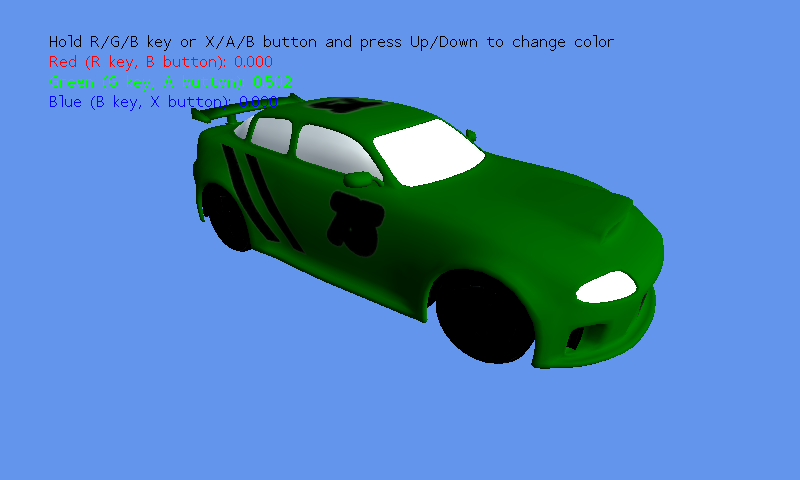

Color Replacement
Ported from Microsoft's XNA 4.0 Color Replacement sample.
Source for this sample on GitHub ↗

Play ▸Opens in a new tab. Hold R, G or B and press Up or Down to change that paint-color channel.
About this sample
A spinning car demonstrates color replacement with an artist-defined alpha mask. Its original XNA effect combines the chosen paint color with the car texture and lighting, leaving the glass, headlights and other unpainted details intact.
Controls
| Action | Keyboard | Gamepad |
|---|---|---|
| Select red channel | Hold R | Hold B |
| Select green channel | Hold G | Hold A |
| Select blue channel | Hold B | Hold X |
| Change selected channel | Up / Down | D-pad or left stick Up / Down |
| Exit | Escape | Back |